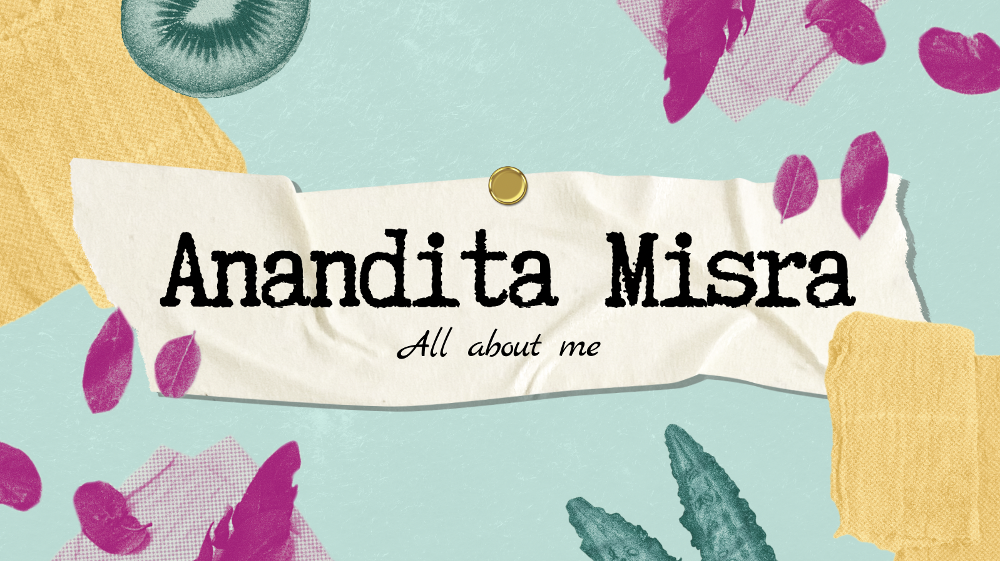
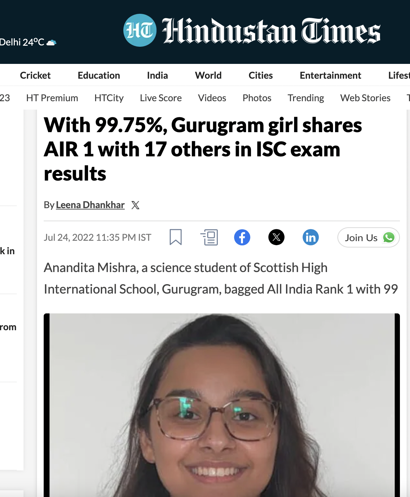
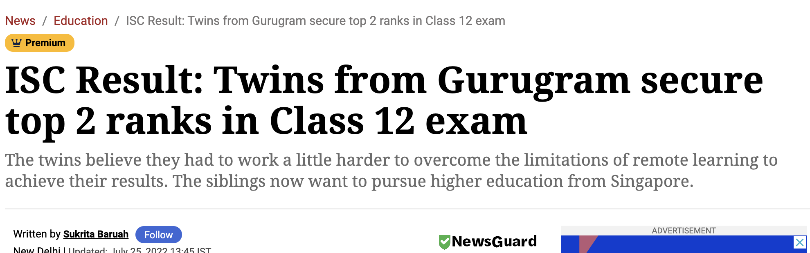
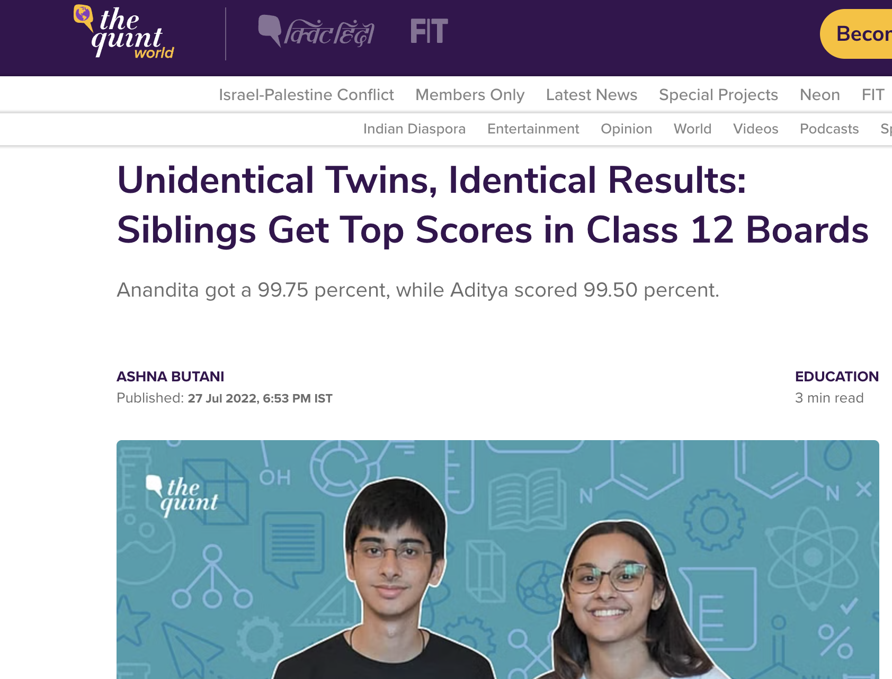

flowchart LR
A[Right Intentions] --> D(Output)
B(Right Actions) --> D{Output}
C(Right Direction) --> D{Output}
D --> E[Minimum Effort]
D --> F[Maximum Impact]
About Me
Hi there, my name is Anandita! Here you will find ALL THINGS ANANDITA

My intellectual interests!
Driven by a curiosity to study the intricacies of human behavior combined with my growing understanding of established theories of choice and decision-making, I am actively seeking opportunities to engage in research and analysis within the field.
Passion combined with a belief in discipline, honest work, and regularity has made me strive for excellence and embrace every opportunity for growth. This kind of intensity has always made sense to me because these were the choices and resources presented to me since the beginning.
Excited and ready for the journey ahead at NUS and beyond with the same values and to combine my passion with my personal growth to understand the choices and resources presented to other people that are different from mine.
These are some of my media reps from school, along with my twin brother!



My blog
Click on this link to access my blog!
Click here to view my Linkedin Profile!
I strive to be human-centric in every pursuit- the following summarises what I feel about being human-centric or user-centric.
My video editing interests
These are some videos I created!
Smart Cities Project with my twin brother!!!!
Competition Submission- Winner of National CSIR Comp!
DTK1234!!!! This was a project under the module at NUS where we had to identify Norman Doors!
A bit more about me
In less than a year, I have fallen in love with Singapore’s environment in general and the positivity and satisfaction it offers to me as an individual. I love to write and read!
Feel free to reach out to share insights, engage in meaningful conversations, discuss opportunities, or even talk about life in Singapore